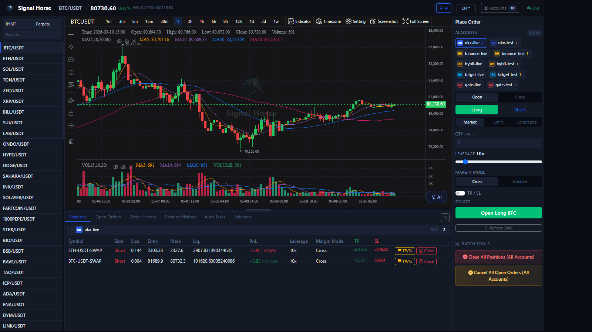

TradeArk User Manual¶
TradeArk is a local-first crypto trading workstation. This handbook focuses on the local UI provided by rust_executor, with an emphasis on understanding the interface, connecting accounts, placing manual and batch trades, using AI-assisted features, and checking results.

About the screenshots
The screenshots in this handbook come from a test environment. They are here to explain the layout and entry points. Your own accounts, prices, positions, and AI configuration will differ.
Recommended reading order
- Start with First Run to make sure you can open the local UI.
- Continue with UI Overview to learn what each region does.
- Read the feature pages in the “Interface Guide” section according to the areas you use most.
- Then go through Add Accounts and Manual Trading to complete one minimal trading workflow.
- After that, move on to AI and Automation.
Core features at a glance¶
- Account management: add
OKX,Binance,Bybit,Bitget, andGate.ioaccounts from one window, separate live and testnet accounts, and batch-test connectivity. - Batch trading: select multiple accounts in the right order panel, send the same open or close instruction to all of them, and use the bottom batch tools for one-pass cleanup.
- Manual trading: use market, limit, and trigger orders, set TP / SL, and verify positions, open orders, history, and assets from the bottom tabs.
- AI and automation: use the bottom-right AI analysis entry, the AI quick-order modal, and auto-trade tasks.
What this system can do¶
- Open a unified trading UI in a local browser.
- Switch exchanges, market types, symbols, and timeframes from one page.
- Connect
OKX,Binance,Bybit,Bitget, andGate.iothrough the account center. - Place manual and batch trades in the right order panel, set TP / SL, and inspect positions, orders, history, and assets from the bottom tabs.
- Use model analysis and automation through the top
AIentry and the bottom auto-trade entry points.
What batch trading means here¶
- In the right order panel, you can select multiple accounts at the same time and send the same open or close instruction to all of them.
- With the batch tools at the bottom of the panel, you can close positions or cancel open orders across the currently selected accounts in one pass.
- Before using it in live accounts, read Right Order Panel and Manual Trading, then validate the workflow with testnet accounts first.
Quick facts¶
| Item | Current convention |
|---|---|
| Local UI URL | http://127.0.0.1:38182/ |
| Health check | GET /health |
| Root path behavior | GET / currently serves both the UI and a health alias |
| Official download area | Website install/download area |
| Main Windows artifact | tradeark_windows_portable.zip |
| Windows launcher | Start TradeArk.cmd |
| Linux / macOS one-line installer | install.sh |
| Windows one-line installer | install.ps1 |
Who this handbook is for¶
- Users who want to run their trading tool on their own computer instead of sending keys to a remote control plane.
- Operators who want to trade manually and review status from a browser UI.
- Users who want to connect the local executor to OpenClaw, Claude Code, Codex, or other AI-assisted workflows.
Documentation scope¶
This documentation is centered on opening the local UI, understanding the interface, configuring accounts, placing manual and batch trades, and using AI plus automation features.
It does not cover:
- Exchange adapter internals.
- Packaging script implementation details for Windows, macOS, or Linux.
- Website back-office, analytics dashboards, or internal admin logic.
If you are a normal user, you can skip the API section at first. Only go to API Appendix (Advanced) when you need scripting, integration, or secondary development.
Document map¶
If you are a normal user, this is the recommended reading path:
- First Run
- UI Overview
- Top Status Bar
- Markets and Symbols Sidebar
- Chart and Timeframe Tools
- Bottom-Right AI Analysis
- AI Quick Order Modal
- One-Click Auto Trade
- Right Order Panel
- Positions Tab
- Open Orders Tab
- Order History Tab
- Position History Tab
- Auto Trade Tab
- Assets Tab
- Account Center
- AI Model Center
- Add Accounts
- Manual Trading
- AI and Automation
- Updates and Maintenance
- API Appendix (Advanced)
What is already covered¶
- Every main UI region and each major bottom tab
- Account management, testnet distinction, and connectivity checks
- Manual trading, batch trading, TP / SL, batch cleanup, and result verification
- AI model management, bottom-right AI analysis, the AI quick-order modal, and the one-click auto-trade launcher
- Update procedures, maintenance checks, and the advanced API appendix